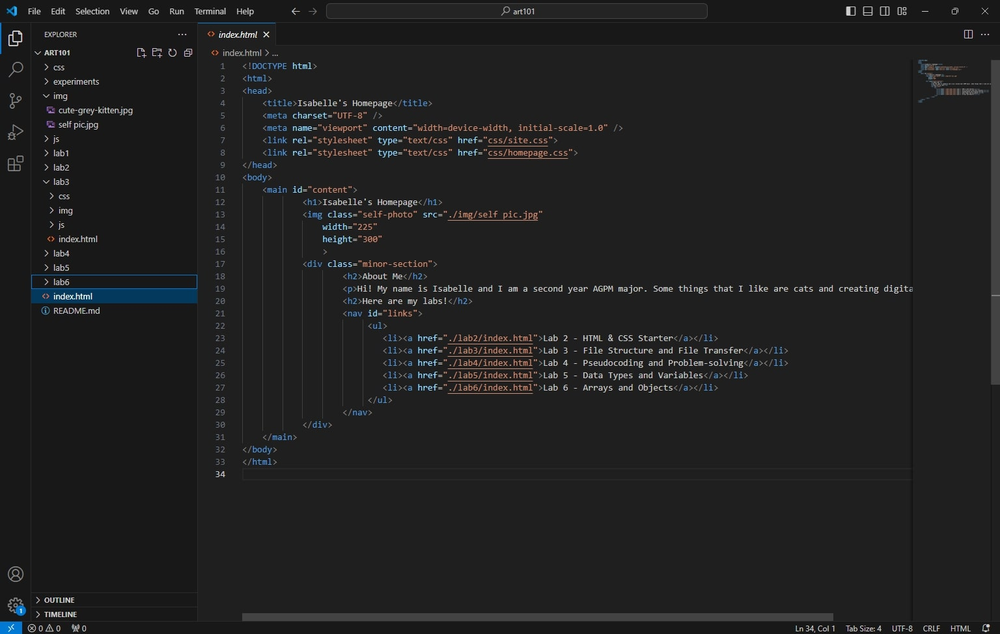
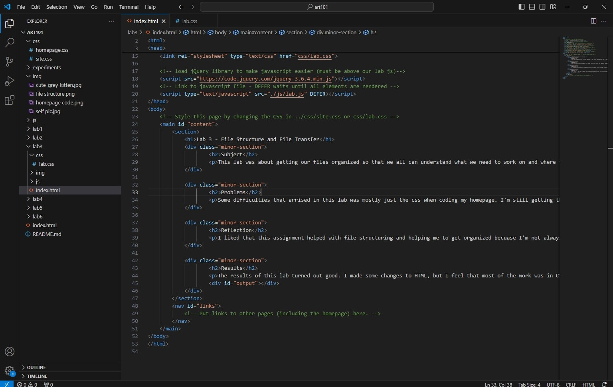
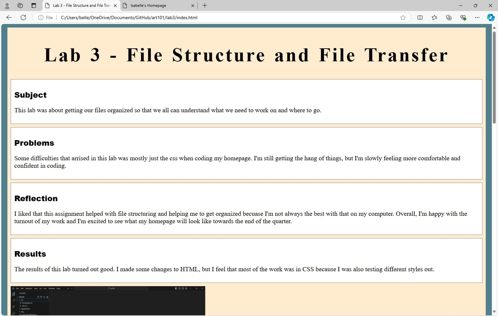

Lab 3 - File Structure and File Transfer
Subject
This lab was about getting our files organized so that we all can understand what we need to work on and where to go.
Problems
Some difficulties that arrised in this lab was mostly just the css when coding my homepage. I'm still getting the hang of things, but I'm slowly feeling more comfortable and confident in coding.
Reflection
I liked that this assignment helped with file structuring and helping me to get organized becuase I'm not always the best with that on my computer. Overall, I'm happy with the turnout of my work and I'm excited to see what my homepage will look like towards the end of the quarter.
Results
The results of this lab turned out good. I made some changes to HTML, but I feel that most of the work was in CSS because I was also testing different styles out.
Here is the file structure from my VS code
Here is my homepage HTML
Here is my Lab 3 HTML
Here is my Lab 3 in the browser